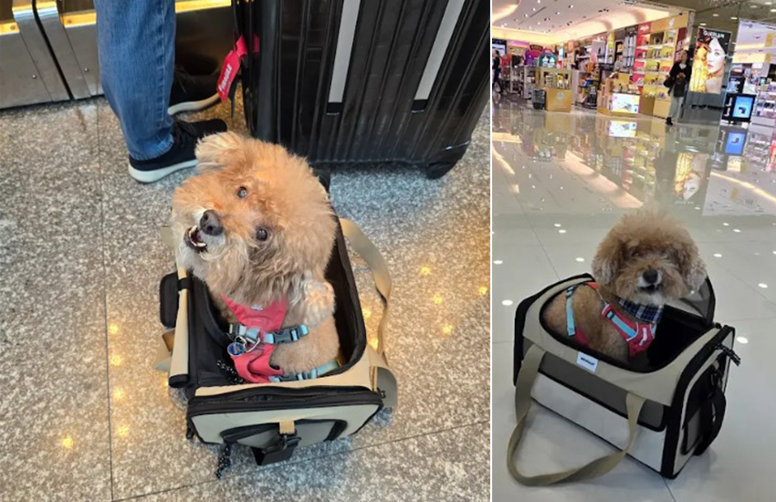
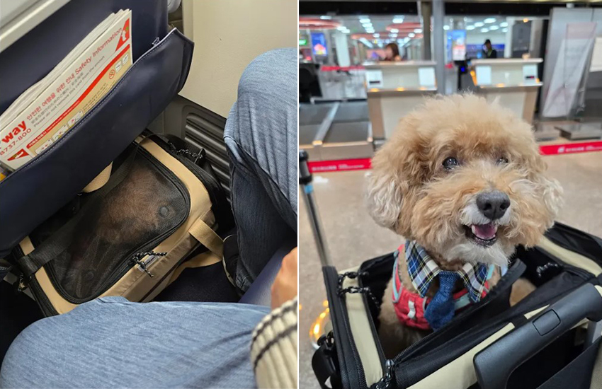

首次搭客艙出國體驗
侯尚蓉│業務二處＼客戶服務部
|  |
2024年看到新聞介紹有航空公司開放寵物搭客艙出國，實在太驚喜：可以帶寶貝出國還不用待貨艙，這不是美夢成真嗎？於是馬上找專門的旅行社安排出國。因為有委託旅行社代辦，所以要處理的手續不多，抽血、帶著寶貝的狂犬病疫苗結果去機場動植物檢疫櫃檯接受檢驗，經核對是本狗無誤後，只對狗狗微笑的漂亮工作人員面無表情地核發輸出同意書，一樣心存感激地雙手接收。
|  |
搭機當天，難掩心中激動，能跟世界上最可愛的小生物一起搭機出國玩，還有什麼比這更滿足的？因體重限制，我們去韓國只能搭廉航，廉航的人員為避免過海關時會被卡住，還陪我們一起進去，說明是他們同意的，讓我們順利通行檢查。
通關後，就牽著他到處走走，一路上感受到許多好奇跟詫異的眼光，免稅店店員更是開心地跟他玩了好一陣子。差不多搭了兩小時，抵達目的地，感受到韓國冷冽空氣的寶貝相當開心，我們也鬆了一口氣，開始韓國吃喝玩樂行。